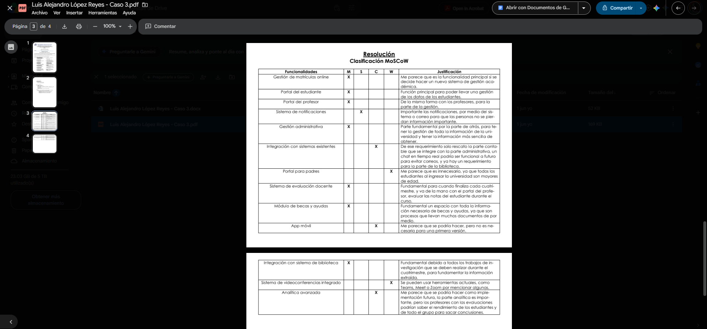

Semana 3
1 de junio de 2026
Fecha y hora
1-06-2026 (5:00pm a 8:30pm – Presencial)
Actividades realizadas durante la clase:
- Se inicia la clase realizando el caso 3, una vez finalizado se discuten las respuestas con los compañeros, mostrando las diferentes perspectivas.
- Se realiza el Quiz #1, para finalizar la clase.
Soluciones implementadas
Clasificación de cada requerimiento del caso 3, según la metodología MoSCoW.
Evidencias (capturas, código, diagramas)
Captura 1: Caso 3 que fue desarrollado al inicio de la clase de forma individual y luego discutido.

Reflexiones o mejoras futuras
Tener cuidado y claridad en el momento que se clasifican los módulos que se deben entregar de un proyecto, si es necesario que salga desde la primera versión, si se puede o debe agregar después, o si definitivamente no se debe agregar.
Notas generales
Ciclo de Vida del Software (SDLC):
Proceso estructurado que cubre desde la concepción inicial hasta el retiro de un sistema para minimizar riesgos y asegurar calidad. Fases principales:
- Análisis de requerimientos: Recopilar y documentar necesidades funcionales y no funcionales.
- Diseño del sistema: Crear la arquitectura del software, bases de datos e interfaces de usuario.
- Implementación: Convertir el diseño en código ejecutable e integrar componentes.
- Despliegue: Instalar y configurar el software en el entorno de producción.
- Mantenimiento: Realizar correcciones, adaptaciones o mejoras de funcionalidad.
Metodologías Predictivas (Tradicionales):
Se basan en un enfoque secuencial y requieren planificación y documentación exhaustiva desde el inicio.
- Cascada: Modelo estrictamente lineal. Cada fase debe completarse antes de la siguiente; ofrece poca flexibilidad ante cambios.
- Modelo en V: Extiende el modelo en cascada agregando una fase de prueba correspondiente por cada etapa de desarrollo.
- Espiral: Adecuado para proyectos complejos, combinando el desarrollo iterativo con un enfoque fuerte en el análisis de riesgos.
- Prototipado: Utiliza versiones preliminares para validar el sistema directamente con los usuarios en etapas tempranas.
Metodologías Ágiles:
Enfoque flexible basado en el Manifiesto Ágil, priorizando a los individuos, la entrega de software funcional y la respuesta rápida ante cambios.
- Scrum: Marco iterativo que utiliza periodos cortos de trabajo ("Sprints"). Se divide en roles (Product Owner, Scrum Master, Development Team) y artefactos (Product Backlog, Sprint Backlog, Incremento).
- Kanban: Sistema altamente visual sin Sprints fijos. Utiliza tableros y establece límites de trabajo en progreso para identificar cuellos de botella.
- Extreme Programming (XP): Enfocado en la excelencia técnica mediante prácticas como programación en parejas, refactorización constante y desarrollo dirigido por pruebas.
- Design Sprint: Metodología de 5 días enfocada en definir problemas y validar ideas rápidamente mediante prototipos probados con usuarios reales.